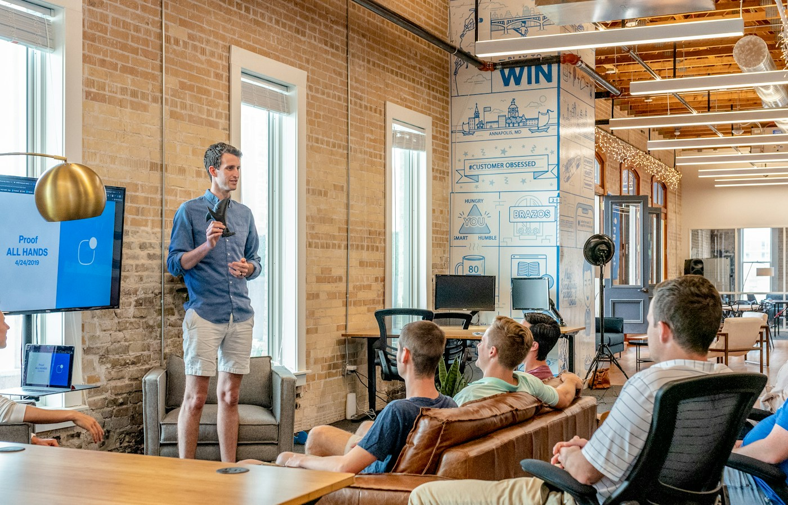
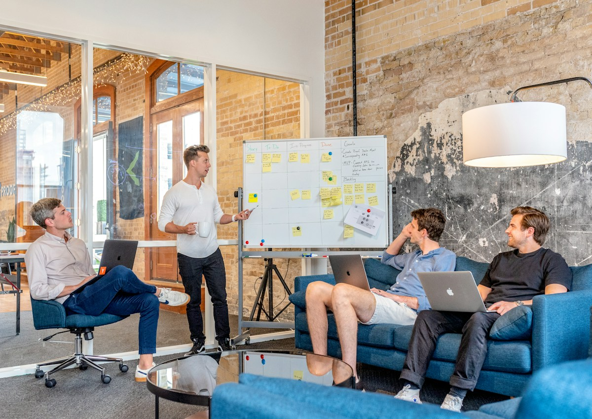
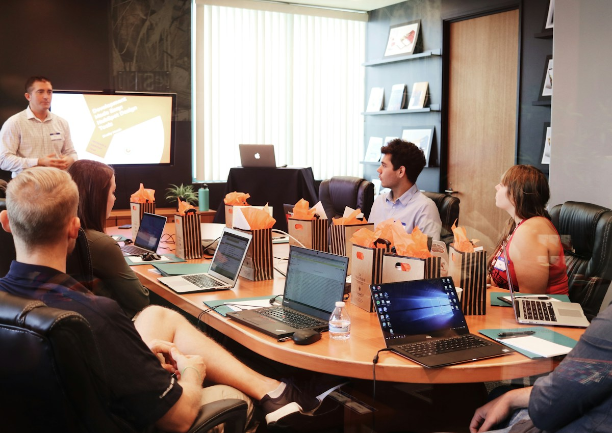
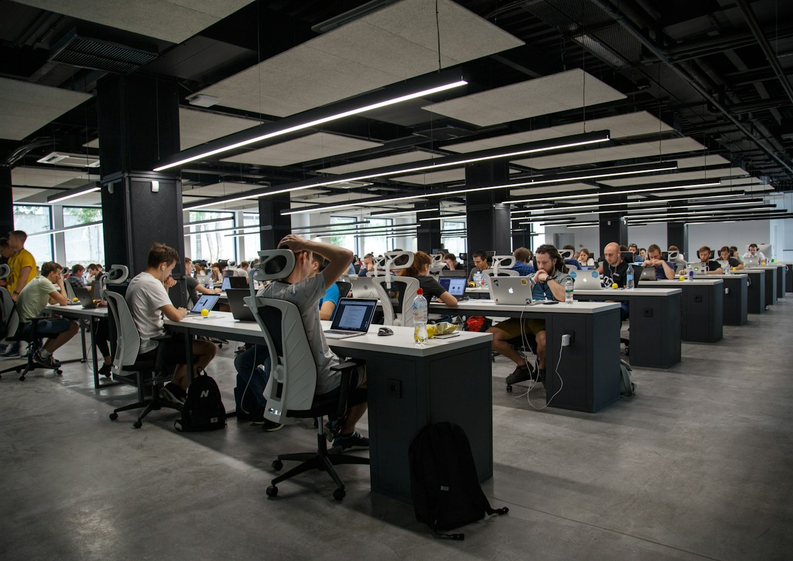

Pitch deck
Короткая презентация для продаж, питча или переговоров: ясная структура, сильные тезисы, визуальные акценты и понятная логика убеждения.

Один слайд — одна мысль
Pitch deck должен двигать аудиторию по понятному маршруту. Мы убираем лишние детали, усиливаем ключевые тезисы и превращаем презентацию в инструмент разговора, а не в перегруженный документ.

Deck должен быть удобен для живого разговора: тезисы поддерживают спикера, а не заменяют его.

Цифры и графики используются только там, где они усиливают аргумент и помогают принять решение.
Презентация должна вести, а не объяснять хаотично
Мы собираем pitch deck как историю: почему сейчас, почему эта проблема, почему это решение, почему эта команда или компания и какой следующий шаг. Так презентация становится проще для восприятия и сильнее в переговорах.
Визуальный стиль работает на уверенность
Для pitch deck важно не “украшать” каждый слайд, а сделать материал быстро читаемым. Поэтому используются крупные заголовки, короткие блоки, воздух, понятная иерархия и визуальные акценты в нужных местах.

Рабочий формат: презентация должна быть легко редактируемой и понятной для команды.
Финальный deck можно использовать для встреч, отправки клиенту, питча и внутренней коммуникации.
Что входит в deck
Структура презентации, смысловая логика, слайды по ключевым блокам, визуальный стиль, тексты, аргументация и финальный CTA.
Deck, который помогает продавать идею
Итог — презентация, которую можно показывать на встрече, отправлять клиенту и использовать как основу для переговоров.